Photo credits
The food photos in this prototype are openly licensed images from Wikimedia Commons. They show dishes like the ones on each TABLE menu, not food from these restaurants, and the restaurants are examples, not current partners. Thank you to the photographers below.
Matsuri
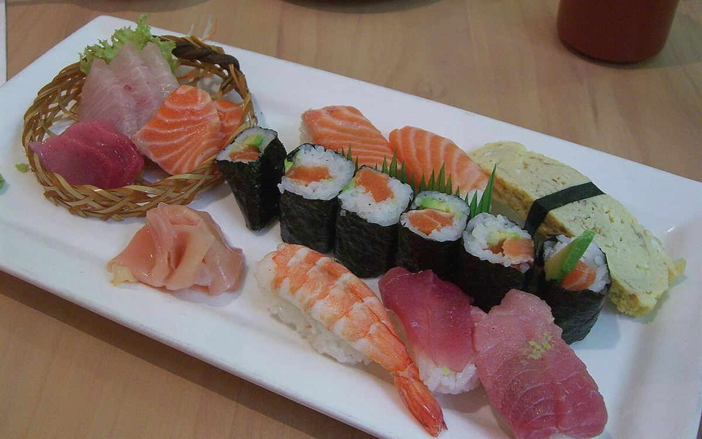
Main photo“Sushi Sashimi Medium Platter - Yama-ya (2570349350)” by Alpha from Melbourne, Australia, CC BY-SA 2.0. Cropped and resized.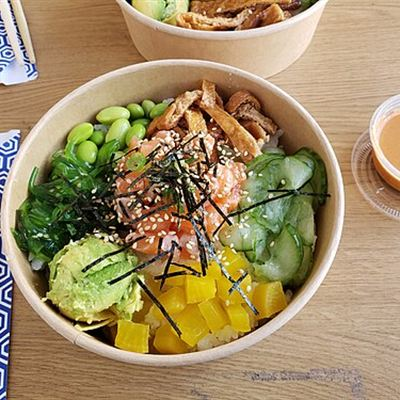
Salmon poke bowl“Salmon Poke Bowl (S) with Spicy mayo sauce - Kitokito” by Andy Li, CC0. Cropped and resized.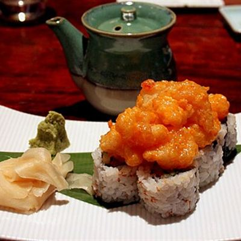
Spicy tuna roll and miso“Tuna roll with glazed shrimp, ginger and wasabi” by Prayitno / Thank you for (12 millions +) view from Los Angeles, USA, CC BY 2.0. Cropped and resized.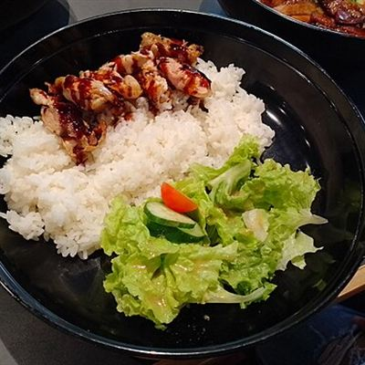
Chicken teriyaki bowl“Teriyaki Chicken Rice Bowl from Botejyu (2024-12-21)” by Wide Awake!, CC BY 4.0. Cropped and resized.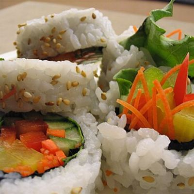
Veggie roll combo“Garden sushi roll” by Loozrboy, CC BY-SA 2.0. Cropped and resized.
.jpg){kind=link}
_with_Spicy_mayo_sauce_-_Kitokito.jpg){kind=link}

.jpg){kind=link}

Mr. 01
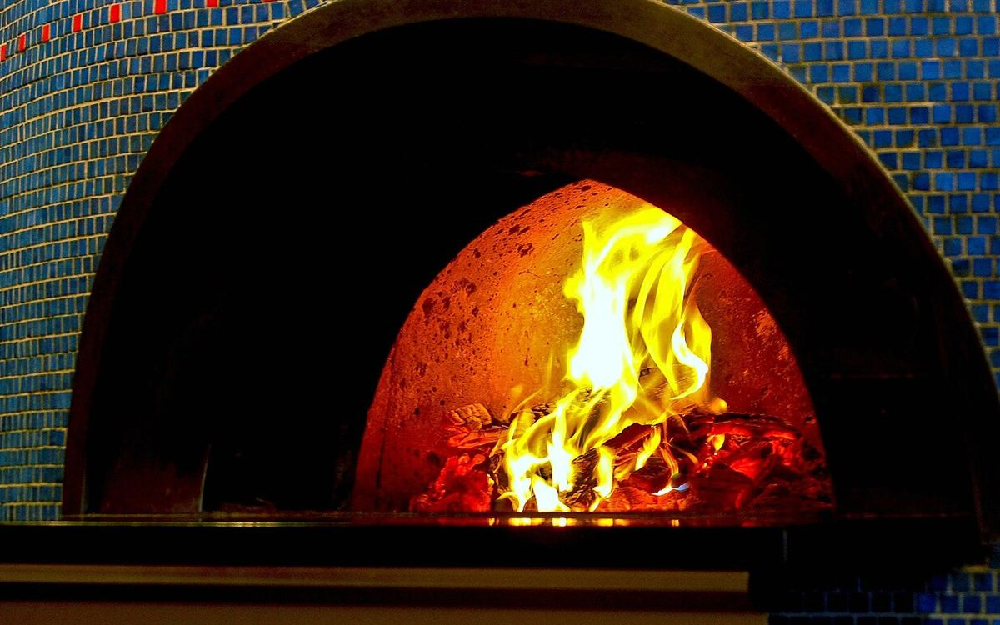
Main photo“Punch Neapolitan Pizza (2257039638)” by Tony Webster from Portland, Oregon, United States, CC BY 2.0. Cropped and resized.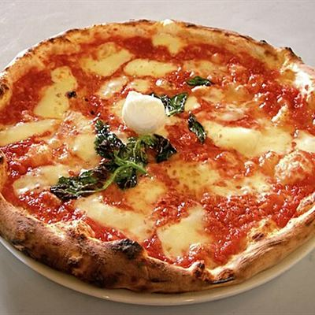
Margherita pizza“Eq it-na pizza-margherita sep2005 sml” by Valerio Capello at English Wikipedia, CC BY-SA 3.0. Cropped and resized.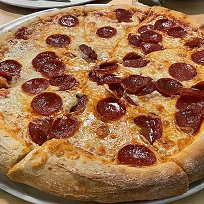
Pepperoni pizza“Pepperoni Pizza from Fellini’s Pizza” by BullDawg2021, CC BY 4.0. Cropped and resized.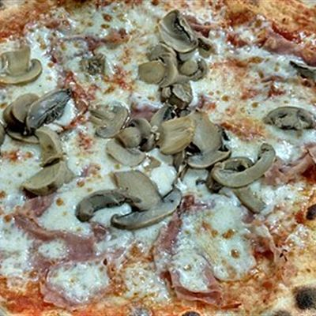
Mushroom and truffle pizza“Mushroom Pizza of Esino Lario” by Thamizhpparithi Maari, CC BY-SA 4.0. Cropped and resized.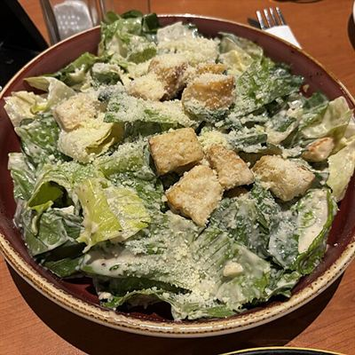
Caesar salad and garlic knots“Caesar Salad from Tony Roma Restaurant- March 2024 02” by Banej, CC BY-SA 4.0. Cropped and resized.
.jpg){kind=link}


Pinecrest Bakery
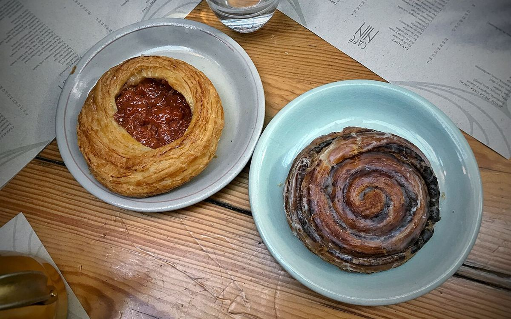
Main photo“Guava and cinnamon pastries (42983878992)” by T.Tseng, CC BY 2.0. Cropped and resized.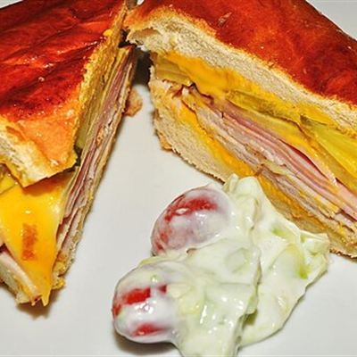
Cuban sandwich and cafecito“Cubano sandwich (1)” by jeffreyw, CC BY 2.0. Cropped and resized.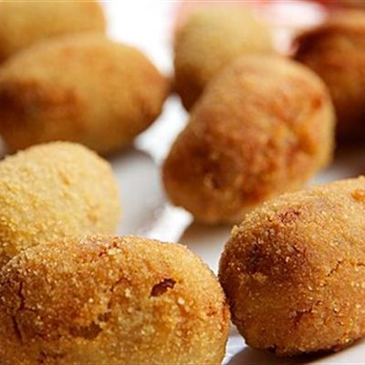
Croqueta preparada“Croquetas Caseras (7068664101)” by Jonathan Pincas from Leon, Spain, CC BY 2.0. Cropped and resized.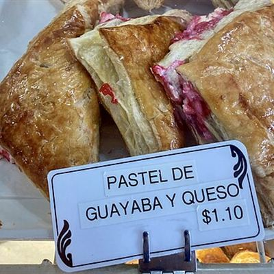
Three pastelitos and a cortadito“Guava and Cheese Pastry Miami” by Phillip Pessar, CC BY 2.0. Cropped and resized.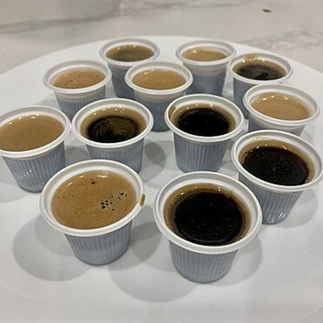
Colada of Cuban coffee to share“Cafecito Cuban Espresso” by Mangocity, CC BY-SA 4.0. Cropped and resized.
.jpg){kind=link}
.jpg){kind=link}
.jpg){kind=link}


Sergio's
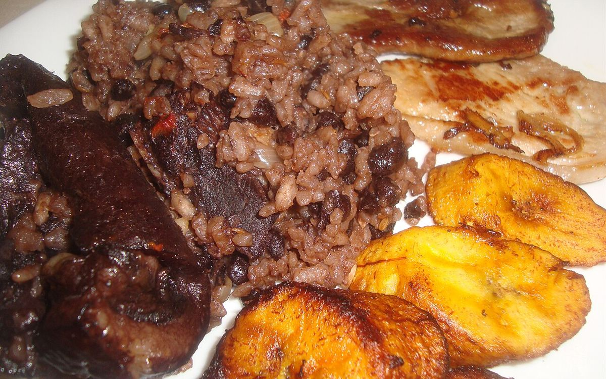
Main photo“Arroz "Congri"” by Juan Emilio Prades Bel, CC BY-SA 4.0. Cropped and resized.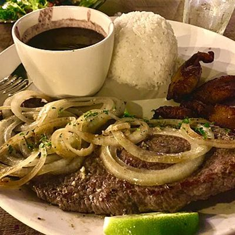
Palomilla steak“Bistec de palomilla” by LittleT889, CC BY-SA 4.0. Cropped and resized.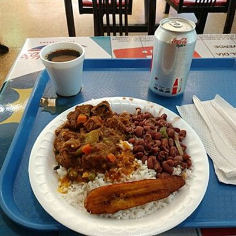
Ropa vieja“Ropa vieja, arroz y plátano macho” by ProtoplasmaKid, CC BY-SA 4.0. Cropped and resized.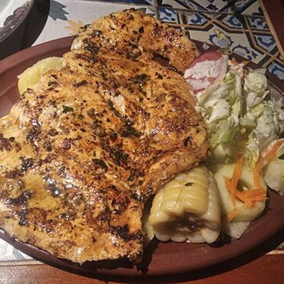
Pollo a la plancha“Pollo a la Plancha” by Ovruni, CC BY-SA 4.0. Cropped and resized.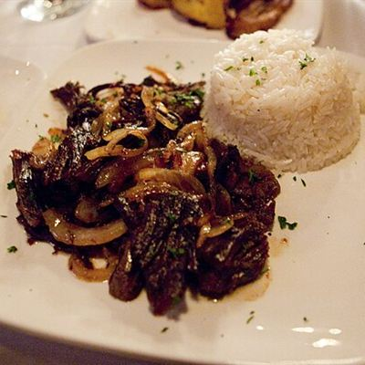
Vaca frita“Vaca frita at cuba nyc” by Anthony Quintano, CC BY 2.0. Cropped and resized.


Pincho
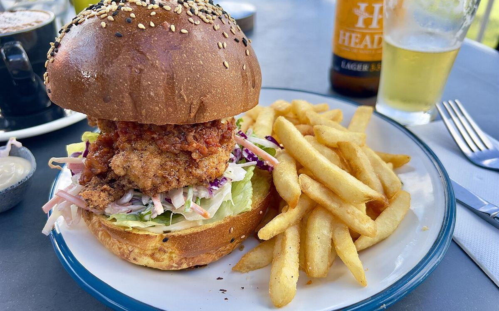
Main photo“Burger and fries in Queensland, 2023” by Kgbo, CC BY-SA 4.0. Cropped and resized.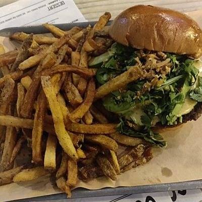
Classic burger and fries“Cheeseburger and fries 4” by Kurtkaiser, CC0. Cropped and resized.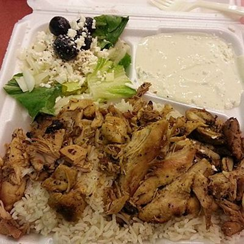
Chicken pincho bowl“Chicken Shwarama plate” by User:CrunchySkies, CC BY-SA 3.0. Cropped and resized.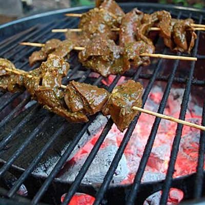
Steak pincho plate“Anticuchos - Grilled Beef Heart skewers” by Carly & Art, CC BY-SA 2.0. Cropped and resized.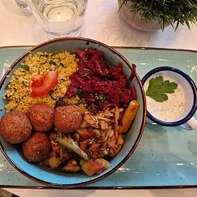
Falafel bowl“Kunstmuseum Bonn, museum bowl” by Gerda Arendt, CC0. Cropped and resized.


Coyo Taco
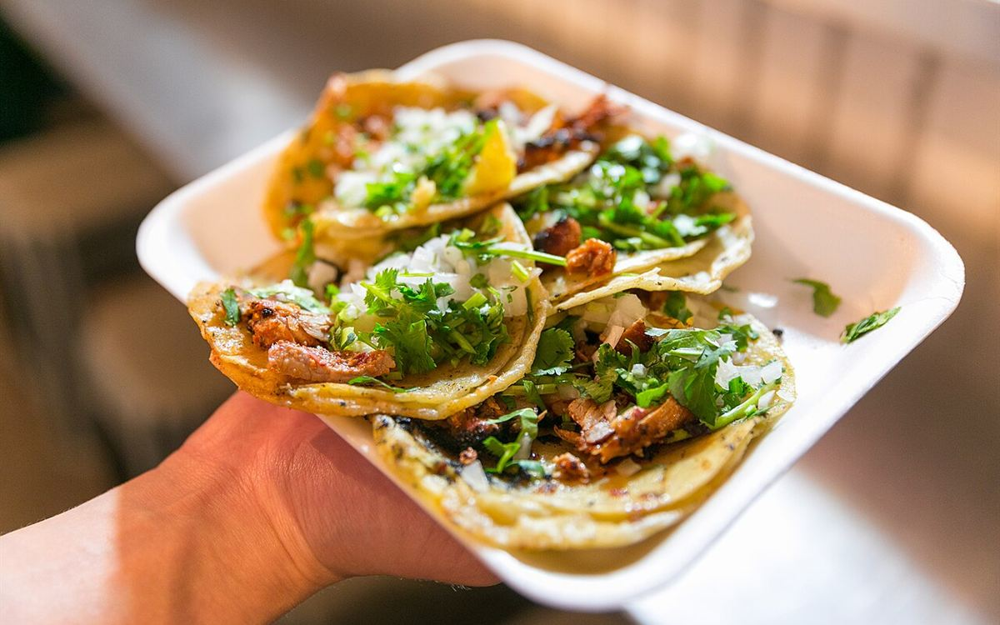
Main photo“(El Flaco) Al Pastor Tacos” by City Foodsters, CC BY 2.0. Cropped and resized.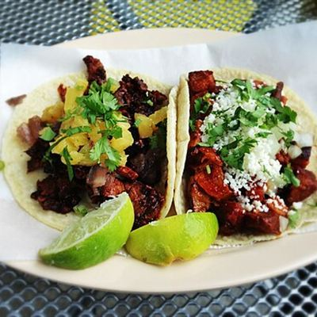
Three tacos al pastor“Tacos al pastor, taco de panza” by T.Tseng, CC BY 2.0. Cropped and resized.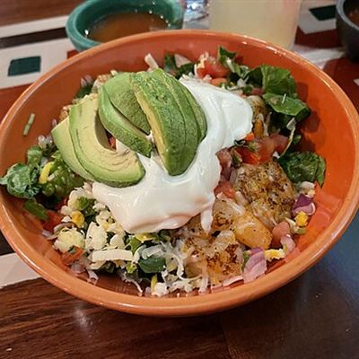
Chicken burrito bowl“Mi Pueblito El Centro - December 2022 - Sarah Stierch 05” by Missvain, CC BY 4.0. Cropped and resized.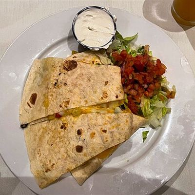
Carne asada quesadilla“At Long Island 2023 267” by Photograph by Mike Peel (www.mikepeel.net)., CC BY-SA 4.0. Cropped and resized.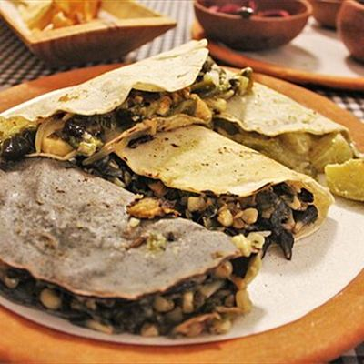
Three veggie tacos“Vegetarian tacos at Cabuche” by https://www.flickr.com/photos/charlieontravel/, CC BY 2.0. Cropped and resized.
_Al_Pastor_Tacos.jpg){kind=link}